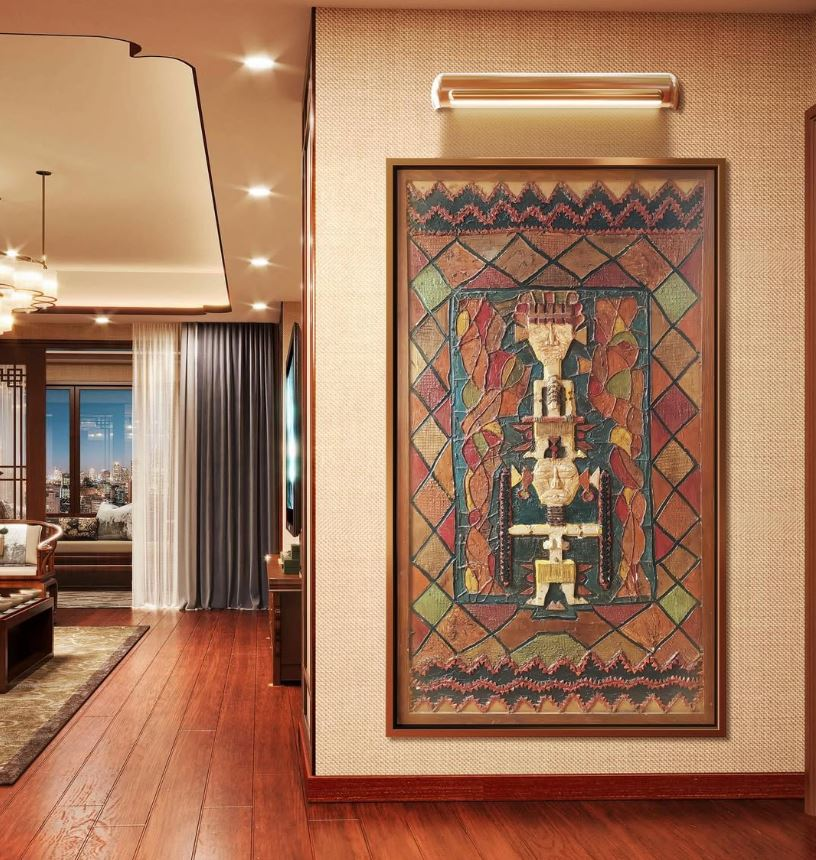

Focus
Collection spéciale
Cette série interroge les rapports de présence, les tensions intérieures et les déplacements du regard. Le corps, la matière et la composition deviennent ici des zones de confrontation, d’équilibre et de renversement.

Perspective I
Première exploration d’une présence picturale dense, frontale, traversée par la couleur et le mouvement.
Perspective II
Un dialogue plus silencieux entre surface, matière et tension latente, dans une composition presque retenue.


Perspective III
Une recherche d’équilibre instable, où la forme semble émerger puis se dissoudre dans le geste.